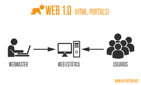
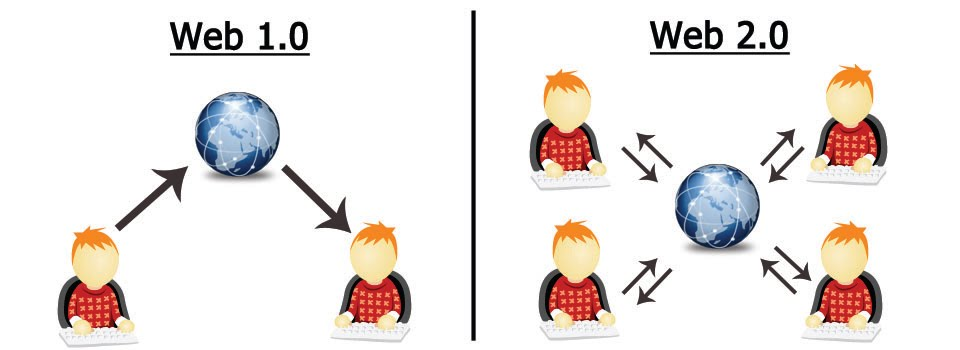
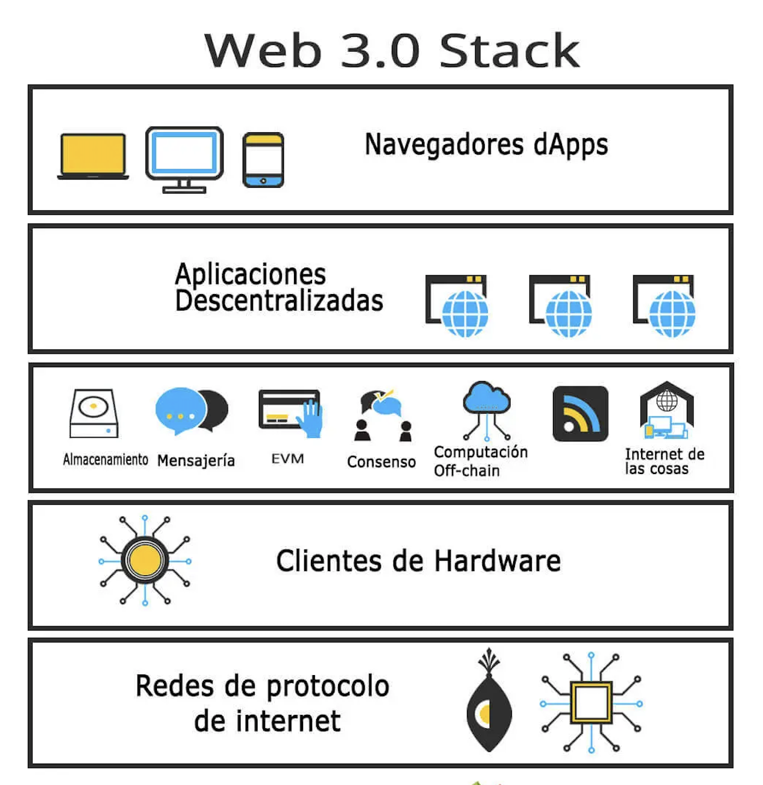
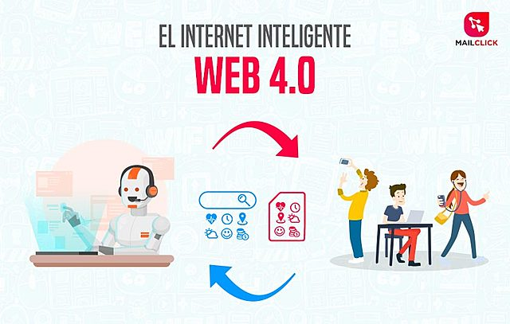

| Web 1.0 |
Fue la primera generación de la web y fue concebida como una web que solo podía buscar y leer contenidos. Los usuarios no pueden agregar contenido a voluntad, ya que esta operación solo se encomienda a usuarios expertos (técnicos, informáticos o de sistema). Web 1.0 comenzó como sitios web para que las empresas difundieran información a las personas (Aghaei, 2012). Esta información se presenta a los usuarios de manera limitada a través de páginas estáticas. |
 |
 |
| Web 2.0 |
Se caracteriza por permitir que cualquier tipo de usuario pueda crear y compartir información sin requerir que tengan habilidades técnicas o sean expertos en programación o computación . Este sitio web tiene un enfoque particular en el contenido generado por el usuario, la usabilidad y la interoperabilidad para los usuarios finales. Debido a estas características, es la forma más fácil para que cualquier usuario interactúe, cree contenido y comparta contenido en la Web; no se requiere experiencia técnica o técnica |
 |
| Web 3.0 |
La web 3.0 es el tipo de internet más actual, cuyas características principales son la democratización y que basado en la tecnología de la web semántica. |
 |
|
| Web 4.0 |
A web 4.0 es como denominamos a la internet de las máquinas que entienden a los humanos y que aprenden cuanto más se usan (machine learning). |
 |
|